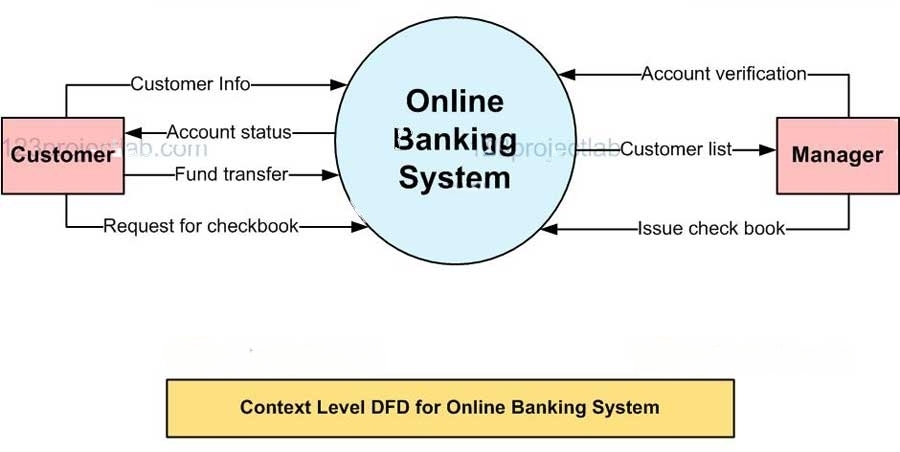

CSL
What is information technology security compliance? Also give its benefits.
Information technology security compliance refers to the adherence to a set of standards, guidelines, or regulations designed to protect sensitive information from unauthorized access, disclosure, use, modification, or destruction.
These standards can be industry-specific, government-mandated, or internally developed.
Key Aspects of IT Security Compliance
- Regulatory Frameworks: Organizations must comply with various regulatory frameworks depending on their industry. Common regulations include:
- HIPAA: Protects healthcare information.
- PCI DSS: Governs payment card data security.
- GDPR: Regulates data protection and privacy in the European Union.
- Risk Management: Compliance involves identifying potential risks to information systems and implementing appropriate controls to mitigate these risks. This includes conducting risk assessments and establishing security protocols.
- Documentation and Reporting: Organizations must maintain comprehensive documentation of their compliance efforts, including policies, procedures, and audit reports. Regular reporting to regulatory bodies may also be required.
- Continuous Monitoring: Ongoing monitoring of IT systems is essential to ensure compliance and detect any anomalies or breaches promptly. This includes regular audits and assessments of security controls.
- Employee Training: Organizations must provide training to employees on compliance requirements and best practices for safeguarding sensitive information.
Benefits of information technology security compliance:
- Reduced risk of data breaches: Compliance with security standards helps to reduce the risk of data breaches, which can lead to financial loss, reputational damage, and legal consequences.
- Enhanced customer trust: Demonstrating compliance with security standards can boost customer confidence in an organization's ability to protect their sensitive information.
- Improved regulatory compliance: Many industries have specific security regulations that organizations must comply with. Adhering to broader security standards can help to ensure compliance with these regulations.
- Lowered insurance premiums: Many insurance companies offer discounts to businesses that are compliant with security standards.
- Enhanced operational efficiency: Implementing security measures can help to improve operational efficiency by streamlining processes and reducing the risk of disruptions.
- Improved employee morale: A secure working environment can help to improve employee morale and reduce turnover.
Bagging & Boosting
Bagging
- Important to remember: Full Form of bagging is Bootstrap aggregating
- Bootstrap Aggregating is the full form of Bagging.
- Bagging is an ensemble method that generates additional data for training from the dataset.
- Bagging helps to reduce the variance error and over-fitting issues in a model.
- Bagging is a parallel method that fits different, considered learners independently from each other, making it possible to train them simultaneously.
- Bagging generates multiple classifiers that are combined using average or majority voting.
- Bagging is suitable for unstable classifiers with high variance.
- Bagging is more robust and resilient, making it particularly suitable for challenging and dynamic real-world scenarios.
Boosting:
- Boosting is an ensemble method that provides sequential learning of the predictors.
- Boosting is a homogeneous weak learners’ model but works differently from Bagging.
- Boosting aims to reduce bias and improve accuracy.
- Boosting starts by classifying the original data set and giving equal weights to each observation.
- If classes are predicted incorrectly using the first learner, then it gives higher weight to the misclassified observation.
- Boosting is an iterative process that continues to add classifier learners until a limit is reached in the number of models or accuracy.
- Boosting has shown better predictive accuracy than Bagging, but it also tends to over-fit the training data.
- Boosting is suitable for stable and simple classifiers with high bias.
Write short note on FISMA compliance.

FISMA, or the Federal Information Security Management Act, is a U.S. federal law enacted in 2002 and later updated in 2014 to enhance the security of federal information systems.
It mandates that federal agencies develop, document, and implement an information security program to protect sensitive data and ensure the integrity of government operations.
Key requirements of FISMA compliance:
- Risk assessment: Agencies must conduct a comprehensive risk assessment to identify potential threats and vulnerabilities.
- Security controls: Agencies must implement security controls to mitigate risks and protect information systems. These controls can be administrative, technical, or physical.
- Contingency planning: Agencies must develop and maintain contingency plans to respond to security incidents and ensure business continuity.
- Monitoring and auditing: Agencies must monitor their information systems for security threats and conduct regular audits to assess compliance with FISMA requirements.
- Continuous improvement: Agencies must continuously review and improve their information security programs to address emerging threats and vulnerabilities.
Benefits of FISMA compliance:
- Enhanced security: FISMA compliance helps to protect federal government information systems from unauthorized access, disclosure, use, modification, or destruction.
- Reduced risk: By implementing security controls and contingency plans, agencies can reduce the risk of data breaches and other security incidents.
- Improved efficiency: FISMA compliance can help agencies to improve their operational efficiency by streamlining security processes and procedures.
- Enhanced public trust: By demonstrating a commitment to information security, agencies can build public trust in the government.
Explain HIPPA in details.
The Health Insurance Portability and Accountability Act (HIPAA) is a U.S. federal law enacted in 1996 that establishes national standards for the protection of individuals' medical records and other personal health information (PHI).
HIPAA compliance is crucial for healthcare providers, health plans, and business associates who handle PHI, ensuring the confidentiality, integrity, and availability of sensitive patient data.
HIPAA components:
- Privacy Rule
- Protects patient health information (PHI)
- Gives patients rights to access and correct their records
- Applies to healthcare providers, plans, and clearinghouses
- Security Rule
- Protects electronic health information (ePHI)
- Requires three types of safeguards:
- Administrative (policies and procedures)
- Physical (facility and equipment protection)
- Technical (data protection and access control)
- Breach Notification Rule
- Requires notification of PHI breaches within 60 days
- Must notify affected individuals, HHS, and sometimes media
- Business Associate Agreements
- Required for entities handling PHI on behalf of healthcare providers
- Ensures third parties follow HIPAA standards
- Includes contractors, vendors, and service providers
Explain requirements for PCI-DSS compliance. Also give the benefits of it.
PCI-DSS (Payment Card Industry Data Security Standard) is a set of security requirements designed to protect cardholder data.
It is mandated by major credit card companies like Visa, Mastercard, American Express, Discover, and JCB.
Key Requirements of PCI-DSS
- Install and maintain a firewall: This is to protect cardholder data from unauthorized access.
- Do not store full cardholder data: Only store the last four digits of the card number, expiration date, and service code.
- Protect stored cardholder data: If you must store cardholder data, encrypt it.
- Develop, implement, and maintain secure systems and applications: Regularly update software to patch vulnerabilities.
- Protect cardholder data in transmission: Use strong encryption protocols like HTTPS.
- Maintain a secure network environment: Restrict network access and monitor for unauthorized activity.
- Restrict access to cardholder data: Grant access only on a need-to-know basis.
- Assign unique IDs to persons with access to cardholder data: This helps track unauthorized access.
- Regularly monitor and test networks: Identify and address vulnerabilities.
- Maintain a policy on information security: Document security procedures and policies.
Benefits of PCI-DSS Compliance
- Reduced risk of data breaches: Adhering to PCI-DSS can significantly reduce the risk of data breaches that could lead to financial loss, reputational damage, and legal consequences.
- Enhanced customer trust: Demonstrating PCI-DSS compliance can boost customer confidence in your organization's ability to protect their sensitive information.
- Improved regulatory compliance: PCI-DSS often aligns with other industry regulations and standards, simplifying compliance efforts.
- Lowered insurance premiums: Many insurance companies offer discounts to businesses that are PCI-DSS compliant.
- Enhanced operational efficiency: Implementing PCI-DSS can lead to improved operational efficiency through better security practices.
Write short note on GLBA compliance.
The Gramm-Leach-Bliley Act (GLBA) is a U.S. federal law that was passed in 1999 to modernize the financial services industry.
It requires financial institutions to protect their customers' nonpublic personal information.
GLBA is also known as the Financial Services Modernization Act of 1999.
Overall, GLBA compliance is essential for financial institutions to protect their customers' privacy and avoid regulatory penalties.
Key Provisions of GLBA:
- Financial Privacy Rule: This rule requires financial institutions to provide customers with a clear and concise notice of their privacy policies and practices. It also gives customers the right to opt out of certain information-sharing activities.
- Fair Credit Reporting Act (FCRA): While not part of GLBA, the FCRA is often mentioned in conjunction with GLBA due to its related provisions. The FCRA protects consumers from inaccurate information in their credit reports and gives them the right to dispute errors.
- Safeguards Rule: This rule requires financial institutions to implement reasonable safeguards to protect their customers' nonpublic personal information from unauthorized access, disclosure, or use.
- Red Flags Rule: This rule requires financial institutions to develop, implement, and maintain programs to identify, detect, and respond to red flags of identity theft.
Benefits of GLBA Compliance:
- Protects customer privacy: GLBA helps to protect customers' personal information from unauthorized access, disclosure, or use.
- Reduces risk of identity theft: GLBA helps to reduce the risk of identity theft by requiring financial institutions to implement safeguards and identify red flags.
- Enhances customer trust: GLBA can help to enhance customer trust in financial institutions by demonstrating a commitment to protecting their privacy.
- Improves regulatory compliance: GLBA can help financial institutions to improve their regulatory compliance by providing clear guidelines and requirements.
Challenges of GLBA Compliance:
- Complexity: GLBA can be a complex law to understand and implement.
- Evolving regulations: The regulatory landscape related to data privacy and security is constantly evolving, making it challenging for financial institutions to stay up-to-date.
- Technological advancements: New technologies can introduce new risks and challenges for protecting customer data.
- Cost: Implementing GLBA compliance measures can be costly.
What are ISO compliance standards? Give benefits of ISO compliance?
ISO (International Organization for Standardization) is a worldwide federation of national standards bodies.
ISO develops and publishes International Standards, which are voluntary agreements between industry, government, and consumers that establish common worldwide specifications for products, services, systems, and processes.
ISO compliance standards are a set of guidelines and requirements that organizations must meet to demonstrate that their products, services, or systems meet specific quality, safety, environmental, or other standards.
These standards are often used to ensure that products and services are safe, reliable, and efficient.
Benefits of ISO compliance:
- Improved quality: ISO compliance can help organizations to improve the quality of their products and services. This can lead to increased customer satisfaction and loyalty.
- Increased efficiency: ISO compliance can help organizations to become more efficient. This can lead to reduced costs and increased profitability.
- Enhanced reputation: ISO compliance can help organizations to enhance their reputation. This can make it easier for them to attract new customers and business partners.
- Reduced risk: ISO compliance can help organizations to reduce their risk. This can help to protect them from legal and financial problems.
- Improved access to markets: ISO compliance can help organizations to improve their access to markets. This can help them to expand their business and increase their sales.
- Enhanced employee morale: ISO compliance can help organizations to improve employee morale. This can lead to increased productivity and reduced turnover.
Some of the most common ISO standards include:
- ISO 9001: This is a standard for quality management systems.
- ISO 14001: This is a standard for environmental management systems.
- ISO 27001: This is a standard for information security management systems.
- ISO 45001: This is a standard for occupational health and safety management systems.
- ISO 22000: This is a standard for food safety management systems.
Write short note on SOX compliance.
SOX compliance refers to adherence to the Sarbanes-Oxley Act (SOX), a U.S. federal law enacted in 2002 in response to major corporate scandals, such as Enron and WorldCom.
It sets new standards for financial reporting for publicly traded companies. Its primary goal is to improve the accuracy and reliability of corporate financial information.
Key provisions of SOX include:
- Audit Committee Requirements: Public companies must establish an independent audit committee to oversee the company's financial reporting processes.
- CEO and CFO Certification: The CEO and CFO must certify the accuracy of the company's financial statements.
- Internal Controls: Companies must establish and maintain effective internal controls to ensure the reliability of their financial reporting.
- Prohibition of Personal Loans: Corporate officers are prohibited from receiving personal loans from the company.
- Auditor Independence: Auditors must be independent from the companies they audit.
Non-compliance with SOX can result in significant penalties, including fines and imprisonment. Adherence to SOX is essential for maintaining investor confidence and protecting the integrity of the financial markets.
Write short note on NERC compliance.
NERC compliance refers to the adherence to the standards and regulations set forth by the North American Electric Reliability Corporation (NERC), which is responsible for ensuring the reliability and security of North America’s Bulk Electric System (BES).
NERC is a non-profit organization.
This compliance framework is essential for maintaining the integrity of the power grid and involves various monitoring, enforcement, and reporting activities.
NERC compliance plays a critical role in maintaining the reliability and security of North America's power grid.
By enforcing stringent reliability standards and monitoring compliance through a structured framework, NERC helps mitigate risks that could lead to widespread outages or security breaches in the electric power system.

Key benefits of NERC compliance:
- Improved reliability: NERC standards help to ensure the reliability of the electric power grid, which is essential for the economy and public safety.
- Reduced risk of power outages: NERC standards help to reduce the risk of power outages, which can be costly and disruptive.
- Enhanced cybersecurity: NERC standards help to protect the grid from cyberattacks, which could have serious consequences.
- Improved emergency preparedness: NERC standards help to prepare for and respond to emergencies such as natural disasters and cyberattacks.
- Enhanced regulatory compliance: NERC standards help to ensure compliance with federal and state regulations.
Explain intellectual property aspects in cyber-law.
Intellectual property (IP) aspects in cyber law encompass the legal protections and rights associated with creations of the mind in the digital environment.
As technology evolves, the intersection of intellectual property rights and cyber law becomes increasingly significant, addressing issues such as copyright infringement, trademark disputes, and the protection of trade secrets online.
Key Aspects of Intellectual Property in Cyber Law
1. Copyright: Copyright protects original works of authorship, including literature, music, art, software, and other creative expressions.
2. Trademarks: Trademarks protect symbols, names, and slogans used to identify goods or services.
3. Trade Secrets: Trade secrets encompass confidential business information that provides a competitive edge.
4. Patents: Patents protect inventions and processes for a limited time.
5. Digital Rights Management (DRM): DRM refers to technologies used to control access to copyrighted works and prevent unauthorized distribution.
Legal Framework Governing IP in Cyber Law
- Information Technology Act, 2000
- This act provides a legal framework for electronic transactions and addresses issues related to cybercrime.
- While it does not explicitly cover all aspects of IP law, it establishes guidelines for electronic records and digital signatures that support e-contracts and online transactions. 2. Copyright Act, 1957
- This act governs copyright protection in India, outlining the rights of authors and creators while also addressing issues related to infringement in the digital space. 3. Trade Marks Act, 1999
- This legislation regulates trademark registration and protection in India, including provisions for addressing cybersquatting and other online trademark disputes. 4. International Treaties
- Several international agreements govern intellectual property rights globally:
- Berne Convention: Protects literary and artistic works.
- TRIPS Agreement: Sets minimum standards for IP protection among World Trade Organization (WTO) members.
Explain E-Contracts and its different types?

E-contracts, or electronic contracts, are legally binding agreements created and signed electronically.
They utilize digital platforms for negotiation, signing, and enforcement, offering the same legal enforceability as traditional paper contracts.
E-contracts have become increasingly prevalent due to their convenience and efficiency in various business transactions.
Types of E-Contracts
- Shrink Wrap Agreements:
- These contracts are enclosed with a product and become binding when the consumer opens the package. The terms are typically found inside the packaging.
- Clickwrap Agreements:
- Users must click an "I agree" button to accept the terms before proceeding with a transaction or using a service. This method is common for software licenses and online services.
- Browse Wrap Agreements:
- These agreements do not require explicit consent; instead, users agree to terms simply by using a website. The terms are usually linked at the bottom of the webpage.
- Scroll Wrap Agreements:
- Users must scroll through the terms before they can accept them, often requiring them to reach the end before clicking "I agree."
- Sign-In Wrap Agreements:
- Similar to clickwrap agreements but typically used when users create accounts on websites. By signing up, users agree to the terms without explicitly clicking an acceptance button.
Explain electronic banking in India and what are laws related to electronic banking in India.

Electronic banking, commonly known as e-banking, refers to the use of electronic means to conduct financial transactions and manage banking services.
In India, e-banking has transformed the banking landscape by enabling customers to perform various banking activities online, thus enhancing convenience and efficiency.
E-banking in India began gaining traction in the late 1990s, with the Industrial Credit and Investment Corporation of India (ICICI) being the first to introduce online banking services in 1996.
This innovation was followed by other banks like HDFC and Citibank, which launched their online platforms in 1999.
The growth of e-banking has been fueled by advancements in technology and increasing internet penetration across the country. Key features of e-banking include:
- 24/7 Accessibility: Customers can access their accounts anytime and anywhere.
- Variety of Services: E-banking encompasses a wide range of services including fund transfers (NEFT, RTGS, IMPS), bill payments, loan applications, and account management.
- Cost Efficiency: Both banks and customers benefit from reduced transaction costs and increased operational efficiency.
- Security Measures: E-banking platforms implement robust security protocols such as encryption, multi-factor authentication, and real-time fraud monitoring to protect user data.
Types of E-Banking Services
E-banking services can be broadly classified into two categories:
- Financial Services:
- Fund transfers between accounts.
- Payment for goods and services.
- Online investment options.
- Non-Financial Services:
- Viewing account statements.
- Requesting chequebooks or debit cards.
- Monitoring loan statuses and investment portfolios.
Laws Related to Electronic Banking in India
- Information Technology Act, 2000: This act provides legal recognition for electronic transactions and digital signatures, facilitating e-commerce and e-banking operations.
- Payment and Settlement Systems Act, 2007: This legislation regulates payment systems in India, ensuring the safety and efficiency of electronic payment methods.
- Reserve Bank of India (RBI) Guidelines: The RBI has issued various guidelines concerning electronic banking operations, focusing on consumer protection, security measures, and operational standards for banks.
- Cheque Truncation System (CTS): Introduced to enhance the efficiency of cheque processing through electronic means.
- Unified Payments Interface (UPI): A regulatory framework established by the National Payments Corporation of India (NPCI) that facilitates instant money transfers between bank accounts via mobile devices.
Explain the term evidences and types of evidences.
Evidence is a crucial concept in legal proceedings, serving as the foundation for establishing facts and supporting claims in court.
The term "evidence" refers to any item, material, or statement that helps to prove or disprove a matter in question.
It is derived from the Latin word "evidens," meaning clear or certain.
1. Oral Evidence
- **Definition**: This involves statements made by witnesses that are relevant to the case.
- **Types**:
- **Direct Oral Evidence**: Testimonies given by individuals who directly witnessed an event (e.g., an eyewitness to a crime).
- **Hearsay Evidence**: Statements made by someone who did not witness the event, generally inadmissible unless exceptions apply.
- Documentary Evidence
- Definition: Any written or recorded communication presented to prove a fact.
- Types:
- Primary Documentary Evidence: Original documents (e.g., contracts, official records).
- Secondary Documentary Evidence: Copies of documents that may be admissible under certain conditions. 3. Real Evidence
- Definition: Physical objects presented in court that are directly related to the case (e.g., weapons, fingerprints). 4. Demonstrative Evidence
- Definition: Visual aids used to illustrate or clarify other evidence (e.g., diagrams, maps, photographs). 5. Testimonial Evidence
- Definition: Statements made by witnesses under oath in court.
- Types:
- Eyewitness Testimony: Direct observations of events.
- Expert Testimony: Insights from professionals with specialized knowledge relevant to the case. 6. Scientific Evidence
- Definition: Evidence derived from scientific methods and analysis (e.g., DNA testing, forensic analysis). 7. Direct Evidence
- Definition: Evidence that directly proves a fact without needing inference (e.g., an eyewitness account of a crime). 8. Circumstantial Evidence
- Definition: Indirect evidence that requires inference to connect it to a conclusion (e.g., evidence suggesting motive or opportunity).
Explain E commerce and Discuss its types in details.

E-commerce, short for electronic commerce, refers to the buying and selling of goods and services over the internet. It involves the exchange of data or currency to process a transaction between a buyer and a seller.
E-commerce operates in different forms, and here are the different types of e-commerce:
- Business-to-Consumer (B2C):
- This type of e-commerce involves companies selling their products or services directly to the end-user, the consumer who needs it.
- This is the most common type of e-commerce, and it includes online retailers such as Amazon, Walmart, and Target.
- Business-to-Business (B2B):
- This type of e-commerce involves businesses selling their products or services to other businesses. The buyer often resells the products to the consumer. B2B e-commerce includes companies such as Alibaba, which connects businesses with suppliers.
- Consumer-to-Consumer (C2C):
- This type of e-commerce involves consumers selling products or services to other consumers.
- This type of e-commerce is facilitated by online marketplaces such as eBay, Etsy, and Craigslist.
- Consumer-to-Business (C2B):
- This type of e-commerce involves consumers selling their products or services to businesses.
- This type of e-commerce is common in the freelance industry, where individuals offer their services to businesses that need them.
- Business-to-Government (B2G):
- This type of e-commerce involves businesses selling their products or services to government agencies.
- This type of e-commerce is common in the defense industry, where businesses sell their products to the government.
- Consumer-to-Government (C2G):
- This type of e-commerce involves consumers selling their products or services to government agencies.
- This type of e-commerce is common in the freelance industry, where individuals offer their services to government agencies that need them.
Explain advantages and disadvantages of E-Commerce.
Advantages of E-Commerce
- Wider Market Reach: E-commerce allows businesses to reach a global audience, breaking geographical barriers that limit traditional retail. This capability is particularly beneficial for small businesses looking to expand their customer base without the significant investment required for physical stores.
- Cost-Effectiveness: Operating online typically incurs lower overhead costs compared to maintaining a physical storefront. Businesses can save on rent, utilities, and staffing, allowing them to allocate resources more efficiently.
- Convenience: E-commerce offers 24/7 accessibility, enabling customers to shop at any time from anywhere. This convenience enhances customer satisfaction and can lead to increased sales.
- Improved Customer Engagement: Online platforms facilitate real-time interaction with customers through personalized marketing strategies, such as targeted advertisements and product recommendations based on browsing history.
- Scalability: E-commerce businesses can scale operations more easily than traditional retailers, allowing them to adapt quickly to market demands and expand their product offerings without significant logistical challenges.
Disadvantages of E-Commerce
- Security Risks: E-commerce faces significant threats from cyber criminals, including hacking and phishing attacks that can compromise sensitive customer data. This poses a risk not only to customers but also to the business's reputation.
- Dependence on Technology: E-commerce operations rely heavily on technology, which can be costly and complex to maintain. Technical issues or downtime can disrupt sales and affect customer trust.
- Lack of Physical Interaction: Customers cannot physically inspect products before purchase, which may lead to dissatisfaction if the items do not meet expectations upon delivery. This aspect can deter some consumers from online shopping.
- Privacy Concerns: The requirement for personal information during transactions raises privacy issues. Customers may hesitate to share sensitive data due to fears of misuse or data breaches.
- Increased Competition: The low barrier to entry in e-commerce means that businesses face fierce competition, making it challenging to stand out in a crowded marketplace.